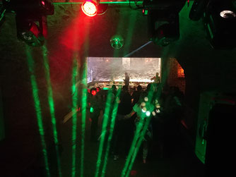
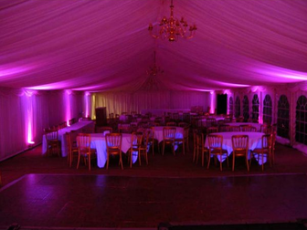
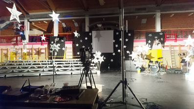
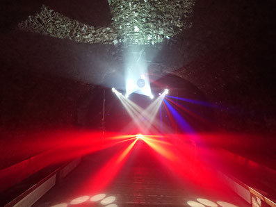

| Osvetlitev zabav | Ambientna osvetlitev |
|---|---|
|  |  |
| Osvetlimo tudi zabave. Zraven okolju prijazne LED razsvetljave uporabimo tudi neškodljive specialne efekte kot so dim ali ogenj. |
Naj vaš prostor ali lokacija izgledata kar se da dobro. Različne vrste luči poskrbijo za prelep izgled vašega prostora. |
Gledališka osvetlitev | Osvetlitev koncertov |
|  |  |
| Na kulturnih prireditvah je zelo pomembna dobra vidljivost nastopajočih. To zelo pomembno razsvetljavo uredimo za vas. Pri tem uporabljamo tudi sledilce (follow spot). |
Za izvrsten nastop je poleg znanja izvajalca pomemben tudi izgled in osvetlitev prostora, ter odra. Za to poskrbijo naši lučkarski tehniki. |